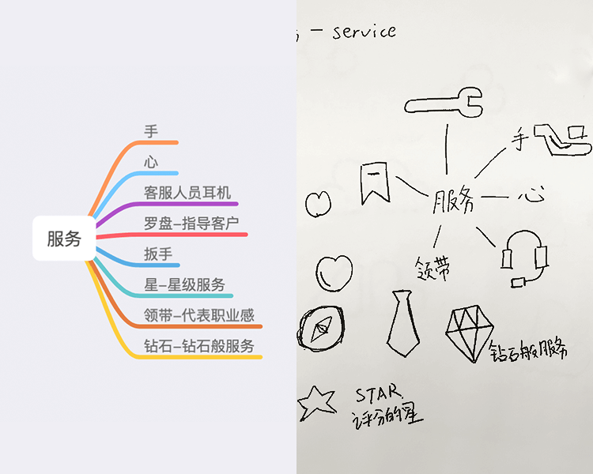

本文将阐述服务云logo的制作。
需求分析
今日需要做一个客户的logo：服务云。客户并没有明确的要求，只有一个比较模糊的要求“水晶的感觉”，针对此，我在网上找了一些相关的图片以供客户与同事进行讨论。
经过查找，我找到两种表现形式都比较符合“水晶”这个关键词：
· 第一种是用水晶本身这种多面体的结构来表达，需要用一个面上不同的色块来呈现↓
· 第二种是用类似苹果iOS5的风格来呈现，偏向于拟物风格↓
造型思考
既然是“服务云”，所以应该紧扣两个点，“服务”与“云”。
服务-service，让我联想到一些事物：

云-cloud，也让我联想到一些事物：
所以接下来就应该组合这些元素，让它们结合在一起。